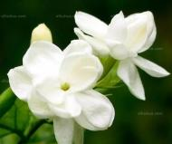
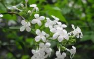
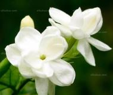
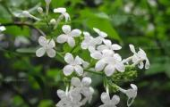
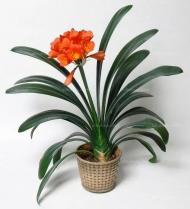
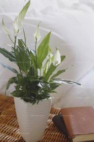
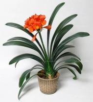
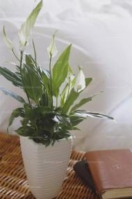
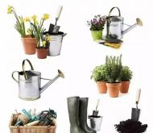
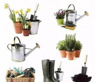

1、巴西铁 室内摆放巴西铁应在光线充足的地方；若光线太弱，叶片上
天气转冷之时,很多爱花的花友,担心自己的爱花在寒风中“受冻”,纷纷
哎呀~小编家的多肉已经出状态了呢~相信很多花友和小编一样吧？
煤渣的主要成份为硅、铝氧化物,其结构特征为多孔性物质,具有一定的
气温不断下降，多肉植物仙人球的生长逐渐由炎夏高温季节的半休眠
有一类花，它们花开后没有朝着太阳肆意张扬，而是谦卑地低头感谢
冬天有花赏就不容易了，还能将花养爆盆更不容易，当然，只要跟花
不知道你们是不是都希望经过自己的劳动，有个爬满花的院墙，有个
说起养花，大家肯定都喜欢那些好看好闻的花，但是你不知道吧，其
一、光照 尽可能将仙人球放到日照时间长的地方，而不是光线最强的
家里装修怕甲醛？晚上总是睡不着？赶紧在房间放上这些植物吧~
天气渐冷，温度继续下降，逐步进入冬季了，此时大家可将大部分植
11月，天气逐渐变冷，肉肉控们，你知道11月多肉应该怎么养吗？
家中摆放植物，既能美化家居又能净化空气。不过，家中的植物不是
如今在户外爱好者的圈子里讨论装备的帖子有很多，很多人都认为带
下面会推荐6种阴暗处也能开花的植物，当然耐阴性差异有大有小，下
养花是件细致耐心的工作，需要精心的护理，花草才能枝繁叶茂。因
有些人对空气特别敏感的，空气一旦有某些污染物就不舒服，这时候
冬季没有什么花看?那是不可能的，下面会介绍8类温暖系的花卉，不仅
1.龙血树：盆栽植株可置于门口两侧、走廊过道、客厅或电梯入口处
每次捧着一束鲜花回家，第一时间去找个好看的花瓶，把花...
天气已经变冷，而很多朋友的教水还是按照夏秋季节的教水方法，那
11月一句话总结，北方注意防寒，南方可劲儿晒，越晒越美丽。11月
减肥瘦身是女性朋友经久不衰的话题，而现今减肥花茶现也成为健康
绿萝吊兰，虽然可以挂起来，但只能欣赏欣赏叶子，想要开花就难
俗话说，家有一老如有一宝，当初父母像宝贝一样宠爱我们，现在...
植物花卉要养得好，首先要会选土，不同的植物给它不同的土壤，
说起中国四大名花，可能你的第一反应是肯定很美啊！但其实它们除
不少人会有这样的遭遇，市场上的花开得鲜艳亮丽，叶面长得...
这篇文章小编将会告诉你，养花的那些小技巧，让你的花养的更好更
花花草草不仅能陶冶情操，还能净化空气。但是家里有小朋友的话，
有时候是不是觉得没有阳光啥植物都养不好呢？虽然开花植物可能和
一个好的花盆能让你在养好花的同时，感受到更多的乐趣。今天花花
一、戒漫不经心 花卉和人一样，是有生命的，需要细心呵护。不少养
看到有花友问花侬沙子能种花吗?其实沙子在养花中有很多种用法，
一、关于植料用土一定不要去挖本地的泥土，湿了不透气干了易板
很多人都喜欢在卧室摆几盆花草，作为生活的调剂。即一个小爱好，
冬天到了，冬天怎么养花成为棘手的事，特别是没有暖气的地方，花
现在做饭的时候，谁不会抓上几把调味料啊~比如紫苏啊之类的，
入秋以后气温逐渐下降，对于很多爱好养花的市民来说，需要根据这
秋冬季节，越来越冷，越来越干燥，北方开暖气，南方开空调，
换盆，是养花的时候必须掌握的技巧之一，尤其是盆栽，长期不换
有很多花友经常疑惑，温水能不能浇花？可不可以用温水浇花，
很多宝宝认为扦插这件事很高大上，只有养花老鸟们才能hold住
养花种植是一种园艺活动，是很适合老人的一种轻微劳动。老年人养
1、把植物吊起来 ▲当家里空间不足时，可以考虑将植物垂直悬挂，
沙子是我们平常养殖花草时经常会遇到的一种介质，别看它常见，
一、园艺操作到底会给孩子们带来哪些好处？ ...
寒冬来临之际，不妨养几棵不怕冷的植物吧，再冷也不会受伤的它
第一步：选好既保水又透气的基质 这是养好花最重要的前提。做到这
紫色的植物给人一种非常很雍容的观感，听起来也是非常性感，
秋天来了。每到这时，都是家乡最美的时候，因为吃的东西最多。
一般卧室养两三盆花儿是没问题的，养多了就不好，因为大部分植
一、园艺操作到底会给孩子们带来哪些好处？ 1、让孩子们远离电子
吊兰是家中常用的悬挂盆栽，形态多样，耐阴性强，又便于管理，
有的懒惰的花友想要非常美丽的花儿，但是不想在养花上花费太多的
是不是感觉养花很难？又要选土，又要浇水，又要施肥，好好的一盆
如今，很多人都喜欢在家里或者办公室养写绿植，让家看起来更绿色
养花巧施肥，焕发植物生长的第二春。不同的季节，植物对肥料的要
还没有护花账号?立即注册
 养花日记
养花日记 护花山庄
护花山庄 更多应用
更多应用


 





 





 
